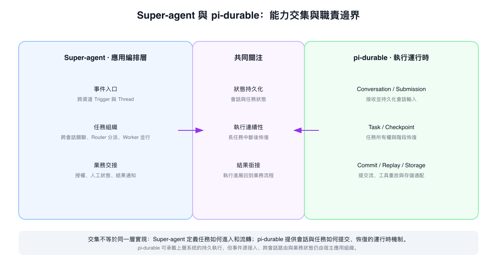
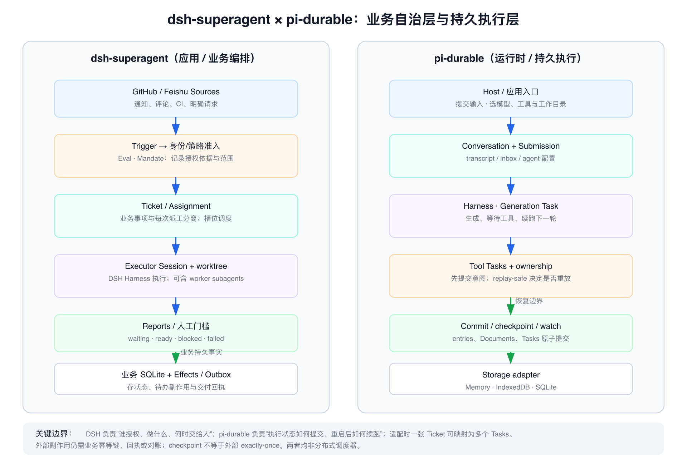

如果 Agent 只在收到一條指令後完成一次對話，系統的邊界很清楚：輸入請求，啓動一次執行，再返回答案。但有些工作不會隨着一次對話結束。Issue、代碼評審、CI 結果和團隊消息會不斷到來；一項工作可能需要多個 Agent 並行推進，也可能要等外部事件後繼續。系統不僅要執行任務，還要知道任務屬於誰、當前走到哪一步，以及何時把進展和結果交還給人。
這類持續在線、事件驅動、能同時推進多個工作項的系統，可以先拆成兩個職責層次：業務編排層負責接收事件、判斷是否處理、關聯工作項、分派任務並通知用戶；Agent 執行層負責在持久的會話和任務狀態上調用模型與工具，讓執行能夠跨中斷繼續。dsh-superagent 展示了前一類系統的原型，社區項目 pi-durable 更靠近後一類運行時能力。兩者有交集，也不處在同一個抽象層。
1. dsh-superagent 是什麼
dsh-superagent 是 DeepSeek Harness 上的一套主動式編碼 Agent 原型，面向單個 GitHub 倉庫，可選接入飛書。獲准的請求會成爲一個 Ticket；系統爲它創建獨立的 Agent Session 和工作目錄，跟進評論、CI 和評審，再回到原會話交付結果，例如創建 Pull Request。管理面板集中展示需要人處理的工作。
這裏需要區分兩件事：DeepSeek Harness 團隊的《Super-agent 設計探索：邁向更自主的 Agent 系統》描述的是更廣的架構設想；dsh-superagent 倉庫是其中部分思路的公開參考實現。倉庫明確說明，它不是正式產品，也與文章中的完整設計不完全相同。項目 README
文章設想的系統以常駐 Router 接收多個渠道的事件，判斷它們與哪些工作相關，再把任務交給上下文隔離的 Worker 並行處理。Worker 不直接向人回覆，而是把進度和結果交還 Router。Thread 訂閱、上下文召回、異步工具執行、計算與狀態分離、Watchdog 等設計，分別支持後續事件跟進、跨會話找回信息、長任務運行和故障監控。
2. dsh-superagent 要解決什麼問題
它關注的瓶頸不是 Agent 能不能完成一項複雜任務，而是團隊能同時推進多少項工作。任務一多，人就要在不同會話間切換，記住各自的上下文，判斷哪些消息需要響應，並持續跟蹤進度。人的注意力開始限制 Agent 系統的總吞吐。
Super-agent 的做法，是把任務之間的協調交給常駐系統：外部消息成爲事件，Router 判斷是否受理和如何分派，Worker 分頭執行；只有結果可用、需要決策或工作受阻時，才把注意力交還給人。它更像團隊的任務調度與交付層，不是單純增強一個 Agent 的代碼推理能力。
文章用合成消息流做了初步調度實驗：每輪約 300 條羣聊和 CI 消息，其中約 20 條是工作請求；編碼過程由一個只模擬耗時的工具代替。Super-agent 的任務完成中位耗時爲 12.4 分鐘，p95 爲 15.7 分鐘；中性提示下的單會話加子代理方案分別爲 20.4 和 29.5 分鐘。前者讀取的緩存 Token 更多。這個結果說明 Router/Worker 的分工值得繼續驗證，但實驗沒有測真實代碼質量，每種設置也只運行五次，不能據此判斷真實研發一定更快或更省錢。實驗報道
3. 這套架構值得討論，證據邊界也要看清
這篇設計文章最有啓發的地方，是把多任務 Agent 的問題從「模型能不能把一項任務做好」轉到「系統怎樣接住持續到來的工作，並把人的協調成本降下來」。但文章提出的「多任務上限取決於人的注意力」，更適合先當作設計動機，而不是已被普遍驗證的結論。文中提到一個人通常只能跟進 3 到 5 個活躍 Session，這是團隊觀察，沒有交代樣本、任務複雜度或測量方法。這個數字可以解釋他們爲什麼想隱藏 Session 管理，卻不宜當作行業通用的人體容量參數。
系統接管了事件過濾、任務路由與狀態維護，人的工作並不會因此消失，而會轉到審查候選事件、處理失敗、批准外部操作、檢查結果和維護策略。消息變少，未必代表監督成本也按同一比例下降。真正需要驗證的是：每項有效交付需要多少人工介入時間，漏掉與誤接請求的比例如何變化，Agent 是否減少了切換成本，還是把成本移到了另一個待辦面板。
實驗也要按它實際回答的問題來讀。合成負載、用耗時工具代替編碼、每種設置五次，主要說明在這個調度場景裏，Router/Worker 的系統級分工比依賴提示詞臨時決定是否委派更穩定。它沒有比較補丁正確率、PR 接受率、返工、人工驗收時間、誤觸發或實際運行成本。單 Session 基線又明顯受提示詞影響：中性提示的五次運行都沒有調用 Subagent，優先委派的提示則有四次委派。因而結果支持「把分工寫進系統機制值得繼續試」，還不能推出這種架構在真實研發中普遍更快、更便宜或質量更高。Router 壓力測試裏 Worker 使用的是 Mock 模型，也更適合證明批處理的吞吐趨勢，不能替代端到端的質量與可靠性驗證。原文全文轉載與實驗說明
主動執行的收益同樣伴隨新的責任。根據羣聊信號提前復現問題、準備補丁，可以減少等待；但若 Agent 越過「準備結果」直接產生外部副作用，誤判就會進入代碼庫或協作流程。持續在線的雲端 Agent 還會把提示詞注入、端側憑據、工作區隔離與跨設備信任邊界放大成系統問題。文章把安全與隱私列爲開放問題，這一點很關鍵：在權限隔離、動作審批、冪等回執和審計邊界完善之前，「少打擾」不能等同於「可放心授權」。
所以，我更願意把 Super-agent 讀成一組值得驗證的系統設計假設，而不是新一代 Agent 的標準藍圖。它提出了一個重要方向：把跨任務協調從人的記憶和手工切換中移到系統層；接下來還要證明，這種轉移在真實負載下確實降低了總成本，而且沒有把風險和監督負擔一起轉移到人看不見的地方。
4. 從 dsh-superagent 的持久化需求看到 pi-durable
dsh-superagent 不只是接收請求、啓動 Worker。它還要記住一項工作目前走到哪裏、重啓後如何接着推進，以及完成後怎樣把結果送回原來的業務流程。做到這一點，既需要保存 Ticket、Assignment 和 Outbox 等業務狀態，也需要依賴 DeepSeek Harness 保存 Agent Session。
社區中的 pi-durable 也在關注這類持久化與連續性問題，但它把重點放在 Agent Runtime：Conversation 保存交互條目，Submission 表示交給會話處理的輸入，Task 保存可恢復的任務狀態；會話條目、Document 和 Task 狀態可以進入統一提交流，Task 在階段邊界保存 checkpoint。進程重啓後，運行時從已提交的階段繼續，而不是恢復任意 JavaScript 調用棧。pi-durable v1.4.0 README
pi-durable 也不侷限於一個會話：它提供多個 Conversation、子任務、所有權關係、任務圖、存儲適配和工具重放等運行時能力。應用開發者可以用它構建長時間運行、可從中斷中恢復的 Agent 產品。事件源接入、業務工作流、授權、審批和用戶通知仍由宿主應用組織；pi-durable 目前標註爲實驗性，API 可能隨版本變化。
5. 兩者的交集與分工
兩者共同關心三件事：狀態能否持久保存，任務能否跨中斷延續，執行結果能否回到發起或管理這項工作的上層。交集在「持久執行」這類需求，差異在它們把狀態放在哪一層、圍繞什麼對象組織。
| dsh-superagent | pi-durable | |
|---|---|---|
| 主要職責 | 業務任務的接收、關聯、派工和交付 | Agent 會話與任務的持久執行和恢復 |
| 核心對象 | Ticket、Assignment、業務事件 | Conversation、Submission、Task、Document |
| 持久化關注點 | 業務流程現在是什麼狀態 | 這段執行提交到哪個階段 |
| 面向的使用者 | 需要管理多項團隊工作的應用或服務 | 需要恢復能力的 Agent Runtime / 宿主應用 |

圖 1 共同關注的是狀態持久化、執行連續性和結果銜接；Super-agent 側重業務任務的進入與流轉，pi-durable 側重會話和任務的提交與恢復。
恢復方式體現了這種分工。dsh-superagent 在重啓時結束正在執行的 Assignment，爲原 Ticket 重新派工，並提示 Worker 先檢查工作目錄、Git 和 GitHub 狀態。pi-durable 則從已提交的 Task phase checkpoint 恢復；工具調用意圖先持久化，只有符合 replay-safe 條件的調用才自動重放。DSH 執行與恢復 · pi 工具重放規則
因此，pi-durable 可以承接一部分上層 Agent 應用的持久執行，但不會自動接管 dsh-superagent 的事件受理、跨會話任務關聯、授權和業務通知。反過來，dsh-superagent 的業務狀態機也不等同於通用的 Task checkpoint 運行時。兩者有交集，可以分層結合，不能直接互換。
6. 適用場景與結合方式
| 需求 | 更接近的選擇 |
|---|---|
| 圍繞一個 GitHub 倉庫接收 Issue、PR、評審和 CI，按團隊規則派工並交付 | dsh-superagent 原型提供較完整的業務流程參考 |
| 已有自己的入口、權限和工單模型，需要會話、Task 和工具調用持久化並支持重啓恢復 | pi-durable 提供運行時能力 |
| 多渠道事件驅動、多工作項併發，同時要求執行狀態可恢復 | 可以組合業務編排層與 pi-durable，但需要自行實現適配層 |
一種可能的組合是：業務層先接收事件並完成准入，建立 Ticket 和 Assignment；適配器再把獲准的工作提交爲 pi-durable 的 Conversation 輸入或 Task；執行結果返回業務層，更新 Ticket 並由 Outbox 通知原渠道。

圖 2 概念集成示意，不是兩個項目現成的產品功能。業務層接收和派工，適配器提交與回傳，宿主應用定義權限映射和外部副作用語義。
集成時需要明確 Ticket 與 Task 的映射、兩邊的狀態歸屬、取消與恢復規則，以及外部副作用的冪等和回執。若要多實例部署，還需自行定義調度、存儲 owner 和故障轉移方式。